기계설계산업기사 (2009-05-10 기출문제)
1과목: 기계가공법 및 안전관리
1. 센터리스 연삭기에서 조정 숫돌의 주된 역할은?
- 공작물의 연삭
- 공작물의 지지
- 공작물의 이송
- 연삭숫돌의 회전
(정답률: 38%)

2. 회전하는 상자 속에 공작물과 숫돌 입자, 공작액, 콤파운드(compound) 등을 함께 넣어 공작물을 입자와 충돌시켜 매끈한 가공면을 얻는 가공방법은?
- 숏 피닝(shot peening)
- 배럴 다듬질(barrel finishing)
- 버니싱(burnishing)
- 롤러(roller) 가공
(정답률: 60%)
3. 연강을 쇠톱으로 절단하는 방법으로 틀린 것은?
- 쇠톱으로 절단을 할 때 톱날의 왕복 횟수는 1분에 약 50 ~ 60회가 적당하다.
- 쇠톱을 앞으로 밀 때 균등한 절삭압력을 준다.
- 쇠톱작업을 할 때 톱날의 전체 길이를 사용하도록 한다.
- 쇠톱은 당길 때 재료가 잘리므로, 톱날의 방향은 잘리는 방향으로 고정한다.
(정답률: 61%)
4. 기어 절삭법이 아닌 것은?
- 창성법
- 인베스먼트법
- 형판에 의한 법
- 총형공구에 의한 방법
(정답률: 83%)
5. 공구마멸 중에서 공구날의 윗면이 칩의 마찰로 오목하게 패이는 현상을 무엇이라 하는가?
- 구성인선
- 크레이터 마모
- 프랭크 마모
- 칩브레이커
(정답률: 79%)
6. 보통선반 사용시 주의해야 할 안전사항 중 맞는 것은?
- 바이트 교환할 때는 기계를 정지시키지 않아도 된다.
- 나사가공이 끝나면 반드시 하프너트를 풀어 놓는다.
- 바이트는 가급적 길게 설치한다.
- 저속운전 중에는 주축속도의 변환을 해도 된다.
(정답률: 75%)
7. 여러대의 NC공작기계를 1대의 컴퓨터에 연결시켜 작업을 수행하는 생산시스템은?
- FMS
- ANC
- DNC
- CNC
(정답률: 51%)
8. 밀링에서 작업할 수 없는 것은?
- 나선홈 가공
- 기어 가공
- 널링 가공
- 키홈 가공
(정답률: 78%)
9. 그림에서 X는 18mm, 핀의 지름이 ø6mm이면 A 값은 약 몇 mm인간?
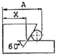
- 23.196
- 26.196
- 31.392
- 34. 392
(정답률: 66%)
10. 절삭속도 90m/min, 커터의 날 수 10개, 밀링커터의 지름을 100mm, 1개의 날당 이송을 0.⑤mm라 할 때 테이블의 이송속도는 약 몇 mm/min인가? (※ “약 mm/min"→"약 몇 mm/min")
- 133.3
- 143.3
- 153.7
- 163.7
(정답률: 63%)
11. 밀링 수직축 장치에 관한 설명으로 틀린 것은?
- 밀링 머신의 부속장치의 일종이다.
- 수평 및 만능 밀링머신에서 직접 밀링 가공을 할 수 있도록 배드면에 장치한다.
- 일감에 따라 요구되는 각도로 선회시켜 사용할 수 있다.
- 수평방향의 스핀들 회전을 기어를 거쳐 수직방향으로 전환시키는 장치이다.
(정답률: 43%)
12. 선반에서 길이방향 이송, 전후방량 이송, 나사깍기 이송 등의 이송장치를 가지고 있는 부분은?
- 왕복대
- 주축대
- 이송변환기어박스
- 리드 스쿠루
(정답률: 74%)
13. 공작기계의 기본운동이 아닌 것은?
- 위치조정운동
- 급속귀한운동
- 이송운동
- 절삭이동
(정답률: 77%)
14. 보통 선반에서 보링(boring) 작업을 할 때 가장 많이 사용되는 공구는?
- 바이트(bite)
- 엔드밀(end mill)
- 탭(tap)
- 필터(filter)
(정답률: 56%)
15. 절삭저항의 3분력에 속하지 않는 것은?
- 주분력
- 이송분력
- 배분력
- 상대분력
(정답률: 75%)
16. 피복 초경합금의 피복재로 사용되지 않는 것은?
- TiC
- TiN
- Al2O3
- SiC
(정답률: 42%)
17. 화재를 A급, B급, C급, D급으로 구분했을 때 전기화재는 어느 급에 해당하는가?
- A급
- B급
- C급
- D급
(정답률: 68%)
18. 독일형 버니어캘리퍼스라고도 부르며, 슬라이더가 홈형으로 내측면의 측정이 가능하고, 최소 1/50mm로 측정할 수 있는 버이너 캘리퍼스는?
- M1형
- M2형
- CB형
- CM형
(정답률: 40%)
19. 사고 발생이 많이 일어나는 것에서 점차로 적게 일어나는 것의 순서로 옳은 것은?
- 불안전한 조건→불가항력→불안전한 행위
- 불안전한 행위→불가항력→불안전한 조건
- 불안전한 행위→불안전한 조건→불가항력
- 불안전한 조건→불안전한 행위→불가항력
(정답률: 73%)
20. 연삭숫돌 바퀴의 표시 “WA 46 J 4 V"에서 ‘4’가 나타내는 것은?
- 입도
- 결합도
- 조직
- 결합제
(정답률: 60%)
2과목: 기계제도
21. 표준 평기어의 피치원지름을 D, 모듈을 m, 잇수를 z이라 할 때 피치원 지름을 나타내는 공식은?
- D=zm
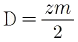
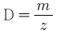
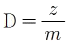
(정답률: 81%)
22. 보기 입체도의 화살표 방향 투상도로 가장 적합한 것은?
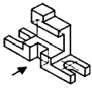
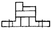
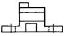
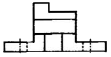
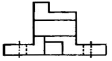
(정답률: 74%)
23. 다음 중 "KS B 1101 둥근 머리 리벳 15×40SV 40 0"으로 표시된 리벳의 호칭 도면의 해독으로 가장 적합한 것은?
- 리벳 구멍 15개 리벳 지름 40mm
- 리벳 호칭 지름 15mm, 리벳 길이 40mm
- 리벳 호칭 지름 40mm, 리벳 길이 15mm
- 리벳 피치 15mm, 리벳 구멍 지름 40mm
(정답률: 62%)
24. 보기와 같이 제3각법으로 정투상한 평면도 우측면도에 가장 적합한 정면도는?
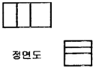
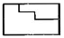
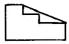
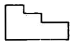
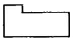
(정답률: 79%)
25. 다음과 같은 그림 기호에 대한 설명으로 틀린 것은?
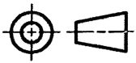
- 제3각법을 나타낸 것이다.
- 투상이 되는 원리는 눈→물체→투상면 순서대로 위치시켜 보는 눈을 기준으로 물체의 뒷면이 투상면에 비춰지는 모습은 정면도로 하여 나타낸다.
- KS에서는 이 각법에 따라 도면을 작성하는 것을 원칙으로 한다.
- 정면도를 기준으로 평면도는 위에 우측면도는 오른쪽, 좌측면도는 왼쪽에 위치한다.
(정답률: 73%)
26. 그림과 같은 용접 기호를 가장 잘 설명한 것은?
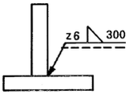
- 목길이 6mm, 용접길이 300mm인 화살표쪽의 필릿용접
- 목두께 6mm, 용접길이 300mm인 화살표쪽의 필릿용접
- 목길이 6mm, 용접길이 300mm인 화살표 반대쪽의 필릿 용접
- 목두께 6mm, 용접길이 300mm인 화살표 반대쪽의 필릿 용접
(정답률: 24%)
27. 도면에 나사의 표시가 M 10-2/1로 되어 있을 때 다음 설명 중 올바른 것은?
- M:관용 나사
- 1:수나사의 피치
- 2:수나사 등급
- 10:호칭 지름
(정답률: 73%)
28. KS 재료기호에서 “SM 40C"의 재료명은?
- 고속도 공구강 강재
- 기계구조용 탄소 강재
- 가단주철
- 용접구조용 압연 강재
(정답률: 80%)
29. 그림과 같은 정면도에 의하여 나타날 수 있는 평면도로 가장 적합한 것은?
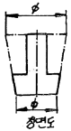
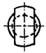
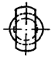
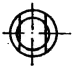
(정답률: 42%)
30. 보기 입체도의 화살표 방향이 정면일 경우 평면도로 가장 적합한 투상도는?
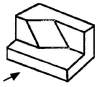
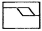
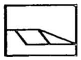
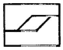
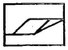
(정답률: 72%)
31. 형상정도 표기 내용 중 기호 표기가 잘못된 것은?
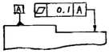
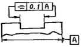
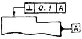
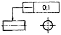
(정답률: 46%)
32. 핸들이나 바퀴 암 및 리브, 훅, 축 등의 단면을 나타내는 도시법으로 가장 적합한 것은?
- 회전 도시 단면도
- 계단 단면도
- 부분 단면도
- 한쪽 단면도
(정답률: 78%)
33. 억지 끼워 맞춤 설명으로 다음 중 가장 적합한 것은?
- 구멍의 최대허용치수보다 축의 최대허용치수가 작은 경우
- 구멍의 최대허용치수보다 축의 최소허용치수가 큰 경우
- 구멍의 최소허용치수보다 축의 최대허용치수가 큰 경우
- 구멍의 최대허용치수보다 축의 최소허용치수가 작은 경우
(정답률: 60%)
34. 보기 입체도에서 화살표 방향이 정면일 때 정투상법으로 나타낸 투상도 중 잘못된 도면은?
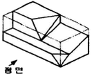
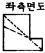
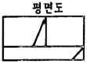
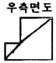
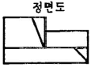
(정답률: 58%)
35. 보기와 같은 공차기호에서 최대 실체 공차방식을 표시하는 기호는?
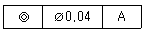
- ◎
- A
- Ⓜ
- ø
(정답률: 64%)
36. 표면상태를 나타낸 도면에서 “2.5”가 나타내는 것은?
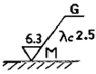
- 표면 거칠기의 상한치
- 표면 거칠기의 하한치
- 컷 오프 값
- 표면 정도 기호
(정답률: 80%)
37. 구름 베어링제도에서 상세한 간략 도시 방법 중 보기와 같은 베어링은?
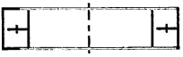
- 단면 롤러 베어링
- 단열 깊은 홈 베어링
- 스러스트 볼 베어링
- 단열 원통 롤러 베어링
(정답률: 34%)
38. 스케치 방법에서 부품의 표면에 광명단을 바르거나 기름걸레로 문지른 후 종이를 대고 눌러서 실제 모양을 뜨는 방법을 무엇이라 하는가?
- 광면단법
- 모양뜨기법
- 압착법
- 프린트법
(정답률: 59%)
39. 보기와 같은 도형의 철골 구조물 도면에서 치수 기입이 잘못된 것은?
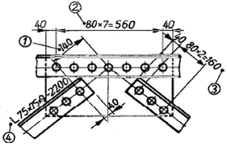
- ①
- ②
- ③
- ④
(정답률: 53%)
40. 도면에서 2종류 이상의 선이 같은 곳에 겹치는 경우 다음 선 중에서 우선 순위가 가장 높은 선은?
- 중심선
- 무게 중심선
- 숨은선
- 치수 보조선
(정답률: 69%)
3과목: 기계설계 및 기계재료
41. 고온에서 다른 재료에 비해 비강도가 우수하기 때문에 항공기 외판 등에 사용하는 재료는?
- Ni
- Cr
- W
- Ti
(정답률: 62%)
42. 탄소강에서 탄소량의 증가에 따른 성질변화에 대한 설명으로 올바른 것은?
- 비중, 열팽창계수가 증가한다.
- 비열, 전기저항이 감소한다.
- 경도가 증가한다.
- 연신율이 증가한다.
(정답률: 50%)
43. 탄소강에 특수원소를 첨가할 경우 담금질성이 향상되는데 효과가 큰 것부터 나열된 것은?
- P＞Mn＞Cu＞Si
- Cu＞Si＞P＞Mn
- Mn＞P＞Si＞Cu
- Si＞Mn＞P＞Cu
(정답률: 34%)
44. 다음 중 구리의 전도성을 가장 많이 감소시키는 원소는?
- P
- Ag
- Zn
- Cd
(정답률: 38%)
45. 선철을 제조하는 과정에서 연료 겸 환원제로 사용하는 것은?
- 석회석
- 망간
- 내화물
- 코크스
(정답률: 49%)
46. 실제로 액체 금속이 응고할 때에는 반드시 융점의 온도에서 응고가 시작되는 일은 적고, 용융점보다 낮은 온도에서 응고가 시작된다. 이 현상을 무엇이라 하는가?
- 서냉
- 급냉
- 과냉
- 급냉과 과냉의 겹침
(정답률: 40%)
47. 강의 조직 중에서 오스테나이트 조직의 고용체는?
- α 고용체
- Fe3C
- δ 고용체
- γ 고용체
(정답률: 32%)
48. 주철에 함유된 원소 중 Mn이 소량일 때 Fe와 화합하여 백주철화를 촉진하는 원소는?
- Si
- Cu
- S
- C
(정답률: 31%)
49. 다음 중 기계구조용 재료로 가장 많이 사용되는 2원 합금재료는?
- 알루미늄합금
- 고속도강
- 스테인리스강
- 탄소강
(정답률: 45%)
50. 니켈 60~70%정도로 함유한 Ni-Cu계의 합금으로, 내식성이 좋으므로 화학공업용 재료로 많이 쓰이는 재료는?
- 톰백
- 알코아
- Y 합금
- 모넬메탈
(정답률: 43%)
51. 재료의 기준강도(인장강도)가 400N/mm2이고, 허용응력이 100N/mm2일 때 안전율은?
- 0.25
- 0.5
- 2
- 4
(정답률: 69%)
52. 평벨트 풀리의 지름이 600mm, 축의 지름이 50mm라 하고, 풀리에 폭(b)×높이(h)=8mm×7mm의 묻힘키로 축에 고정하고 벨트 장력에 의해 풀리의 외주에 2kN의 힘이 작용한다면, 키의 길이는 몇 mm이상이어야 하나? (단, 키의 허용전단응력은 50MPa로 하고, 허용전단 응력만을 고려하여 계산한다.)
- 50
- 60
- 70
- 80
(정답률: 36%)
53. 기어를 사용한 동력전달의 일반적인 특징으로 거리가 먼 것은?
- 큰 동력을 일정한 속도비로 전달할 수 있다.
- 전동효율이 좋다.
- 외부 충격에 강하다.
- 소음과 진동이 발생한다.
(정답률: 57%)
54. 질량 1kg의 물체가 1m/s2의 가속도로 움직일 수 있도록 가하는 힘은?
- 1 [N]
- 1 [dyne]
- 1 [kgd]
- 1[kg]
(정답률: 72%)
55. 관이음에서 방향을 바꾸는 경우 사용하는 관 이음쇠는?
- 소켓
- 니플
- 엘보
- 유니언
(정답률: 60%)
56. 미끄럼 베어링 재료의 구비조건으로 틀린 것은?
- 마찰저항이 클 것
- 내식성이 높을 것
- 피로한도가 높을 것
- 연전도율이 높을 것
(정답률: 52%)
57. 정사각형의 봉에 10kN의 인장하중이 작용할 때 이 사각봉 단면의 한변 길이는? (단, 하중은 축방향으로 작용하며 이 때 발생한 인장응력은 100N/cm2이다.)
- 10cm
- 20cm
- 30cm
- 40cm
(정답률: 61%)
58. 볼베어링의 수명에 대한 설명으로 맞는 것은?
- 반지름방향 동등가하중의 3배에 비례한다.
- 반지름방향 동등가하중의 3승에 비례한다.
- 반지름방향 동등가하중의 3배에 반비례한다.
- 반지름방향 동등가하중의 3승에 반비례한다.
(정답률: 54%)
59. 그림과 같은 아이 볼트에 27kN의 하중(W)이 걸릴 때 사용 가능한 나사의 최소 크기는? (단, 나사부 허용인장응력을 60MPa로 한다.)
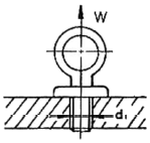
- M24
- M30
- M36
- M45
(정답률: 30%)
60. 100Nㆍm의 굽힘 모멘트를 받는 중실축의 지름은 약 몇 mm 이상이어야 하는가? (단, 중실축의 허용굽힘응력은 98MPa이다.)
- 12mm
- 18mm
- 22mm
- 32mm
(정답률: 25%)
4과목: 컴퓨터응용설계
61. 서피스 모델링에서 할 수 없는 작업은?
- 면을 모델링 한 후 공구 이송 경로를 정의
- 두 면의 교차선이나 단면도를 구함
- 모델링 한 후 은선의 제거
- 무게, 체적, 모멘트의 계산
(정답률: 68%)
62. B-spline 곡선을 정의하기 위해 필요하지 않은 입력 요소는?
- 차수(order)
- 끝점에서의 접선(tangent) 벡터
- 조정점
- 절점(knot) 벡터
(정답률: 33%)
63. 다음 원추곡선 중 ax2±by2=r2의 함수식의 형태로 표현되지 않는 것 은?
- 원
- 타원
- 쌍곡선
- 포물선
(정답률: 31%)
64. 곡면을 모델링하는 여러 방법들 중에서 평면도, 정면도, 측면도상에 나타난 곡면의 경계곡선들로부터 비례적인 관계를 이용하여 곡면을 모델링(modeling)하는 방법은?
- 정 데이터에 의한 방식
- 쿤스(coons) 방식
- 비례 전개법에 의한 방식
- 스윕(sweep)에의한 방식
(정답률: 68%)
65. 솔리드 모델링 방법 중 B-rep(Boundary Repesentation)과 비교해서 CSG(Constructive Solid Geometry)의 특징이 아닌 것은?
- 데이터를 아주 간결한 파일로 저장할 수 있어 메모리가 적다.
- 불리언 연산을 이용하여 모델을 생성한다.
- 형상수정이 용이하다.
- 전개도 작성 및 표면적 계산이 용이하다.
(정답률: 53%)
66. 변환 행렬(Matrix)을 사용할 필요가 없는 작업은?
- Scaling
- Erasing
- Rotation
- reflection
(정답률: 69%)
67. 2차원 좌표상에서의 기하학적 변환을 Homogeneous coordinate(HC)로 표현하면 다음과 같다. 여기서 a, b, c, d와 관계가 없는 것은?
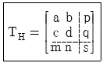
- shering
- rotation
- scaling
- projection
(정답률: 47%)
68. 4개의 모서리 점과 4개의 경계곡선으로 곡면을 표현하는 것은?
- coons 곡면
- Ruled 곡면
- B-spline 곡면
- Ferguson 곡면
(정답률: 69%)
69. 3D 모델링에 대한 일반적인 설명으로 틀린 것은?
- 3D 모델링은 와이어프레임 모델링, 서피스 모델링, 솔리드 모델링으로 구분된다.
- 대부분의 3D 모델링 소프트웨어에서는 3D 모델이 완성되면 2D 도면으로 변환이 가능하다.
- 3D 솔리드 모델은 컴퓨터 화면상에서 제품형상 확인이 가능하여 설계효율이 높아진다.
- 3D 솔리드 모델링은 수식이 복잡하고 계산량이 많아 PC에서는 사용할 수 없다.
(정답률: 80%)
70. CAD/CAM 시스템의 자료를 교환하는 표준규격에 해당되지 않는 것은?
- STEP
- DXF
- XLS
- IGES
(정답률: 77%)
71. 미국의 표준코드로 컴퓨터와 주변 장치 간의 데이터 입ㆍ출력에 주로 사용하는 데이터 표현 규칙은?
- DECIMAL
- BCD
- EBCDIC
- ASCII
(정답률: 74%)
72. 래스터 스캔 디스플레이에서 컬러를 표현하기 위해 사용되는 3가지 기본 색상에 해당하지 않는 것은?
- 흰색(white)
- 녹색(green)
- 적색(red)
- 청색(blue)
(정답률: 74%)
73. 덕트(duct)형 곡면을 생성할 때 주로 사용하는 방법으로 단면 곡선과 스플라인(spline)으로 정의되는 곡면을 모델링하는데 가장 적합한 방식은?
- Sweep 방법
- 비례 전개법
- Point-data fitting 법
- Curve-net interpolation 법
(정답률: 65%)
74. 컴퓨터 하드웨어의 기본적인 구성요소라고 할 수 없는 것은 어느 것인가?
- 중앙처리장치(CPU)
- 기억장치(M
- 운영체제(Operating System)
- 입ㆍ출력장치(Input-Output Device)
(정답률: 50%)
75. CAD/CAM 시스템의 주변기기 중 입력장치에 해당하는 것이 아닌 것은?
- 플로터(Plotter)
- 밸류에이터(Valuator)
- 섬휠(Thumb Wheel)
- 디지타이저(Digitizer)
(정답률: 62%)
76. 다음 중 CPU에 대한 설명으로 옳지 않은 것은?
- 컴퓨터를 사용하기 위해서는 CPU가 없어도 된다.
- 컴퓨터의 작동 과정이 CPU의 제어를 받는다.
- CPU는 입력된 자료를 연산하는 기능을 갖고 있다.
- CPU는 연산된 자료를 특정장소에 보내는 기능을 갖고 있다.
(정답률: 77%)
77. 다음 중 원점을 중심으로 하고 반지름이 r인 원의 방정식은? (단, x, y는 원을 이루는 점들의 좌표이며, A, B, x1, y1, r은 상수이다.)
- x2+y2=r2
- x2+y2+Ax+r=0
- (x-A)-(y-B)=r
- x1x+y1y+r=x12+y12
(정답률: 52%)
78. 다음은 곡면 모델링에 관한 설명이다. 빈 칸에 알맞은 말로 짝지어진 것은?
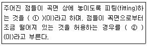
- ① 보간(interpolation) ② 근사(approximation)
- ① 근사(approximation) ② 보간(interpolation)
- ① 블렌딩(blending) ② 스무싱(smoothing)
- ① 스무싱(smoothing) ② 블렌딩(blending)
(정답률: 68%)
79. 중앙처리장치가 빨리 데이터를 처리할 수 있도록 자주 사용되는 명령이나 데이터를 일시적으로 저장하며, 주기억 장치의 액세스 타임과 CPU의 처리속도 사이에 발생하는 속도차를 줄이기 위해 사용하는 메모라는?
- 캐시 메모리(Cache Memory)
- 메인 메모리(Main Memory)
- 보조 메모리(Auxiliary Memory)
- 가상 메모리(Virtual Memory)
(정답률: 73%)
80. CAD 소프트웨어가 반드시 갖추고 있어야 할 기능으로 거리가 먼 것은?
- 화면 제어 기능
- 치수 기입 기능
- 인터넷 기능
- 도형 편집 기능
(정답률: 78%)